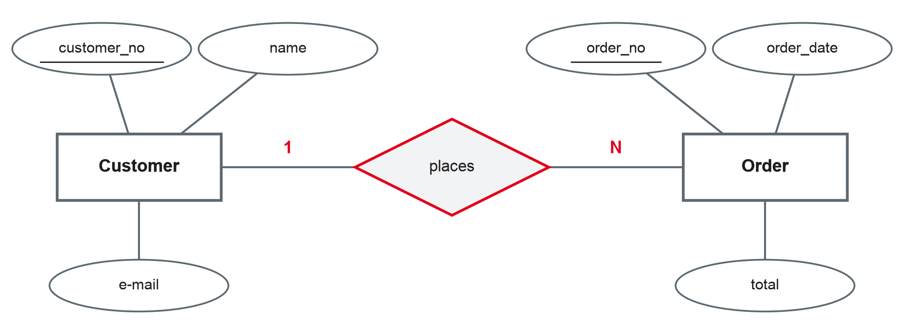
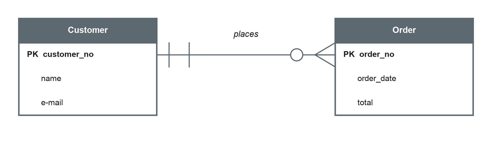
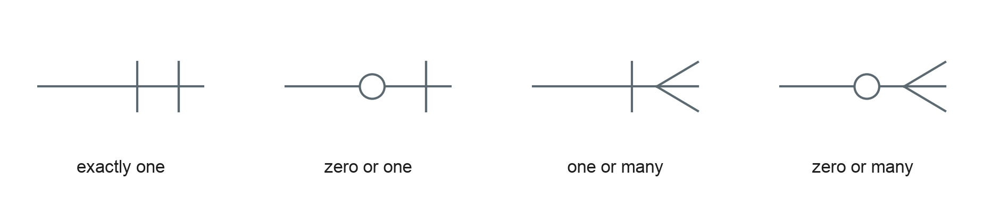

Data Management
Entities, attributes, relationships and cardinalities · Chen and crow's-foot notation
DHBW · Digital Business Management (Business IT) · Semester 2
From the real world to a database
Own illustration based on Elmasri and Navathe (2016) and Staud (2005).
A data model is a simplified picture of a part of the real world — the part the business needs to store data about.
Own summary based on Staud (2005) and Elmasri and Navathe (2016).
"The entity-relationship model adopts the more natural view that the real world consists of entities and relationships."
Chen (1976, p. 9).
The things and their properties
Entity
A distinguishable "thing" of the real world we want to store data about. Example: the customer Anna Berger, the bike with frame number WAX123.
Entity type
The set of all entities with the same properties. Example: Customer, Bike. Drawn as a rectangle.
Typical candidates
People (customer, employee), objects (product, bike), events (order, repair), concepts (contract, course).
Based on Chen (1976) and Elmasri and Navathe (2016).
Based on Elmasri and Navathe (2016).
Good keys are unique, stable and never empty. Names, e-mail addresses or phone numbers are poor keys — they change or repeat.
Based on Elmasri and Navathe (2016).
How entities are connected

Own illustration based on Chen (1976).
| Type | Meaning | Example |
|---|---|---|
| 1:1 | One entity is related to at most one on the other side | Employee manages department |
| 1:N | One entity is related to many on the other side | Customer places order |
| M:N | Many entities on both sides | Student attends course |
To find the cardinality, ask the question from both sides: "How many orders can one customer place?" — "How many customers can place one order?"
Based on Chen (1976) and Elmasri and Navathe (2016).
The (min, max) pair is written next to the entity it describes: each customer takes part in 0 to N "places" relationships.
Based on Elmasri and Navathe (2016) and Staud (2005).
For each pair, ask from both sides. Which cardinality (1:1, 1:N, M:N) fits — and is participation mandatory or optional?
Chen and crow's foot


Own illustration based on Elmasri and Navathe (2016).
| Chen | Crow's foot | |
|---|---|---|
| Entity type | Rectangle | Box with attribute list |
| Attribute | Ellipse | Line inside the box |
| Relationship | Diamond with name | Line with name |
| Cardinality | 1, N, M at the lines | Symbols at the line ends |
| Strength | Clear concepts, good for teaching | Compact, close to tables, common in tools |
| Weakness | Large diagrams get crowded | M:N and relationship attributes are less visible |
Own comparison based on Chen (1976) and Elmasri and Navathe (2016).
Own summary based on Staud (2005).
Velo Neckar sells and repairs bikes. Draw an ER model in Chen notation with attributes, keys and cardinalities.
Preparation: bring your bike shop model — we will extend it. Think about which business you would like to model in your design project.